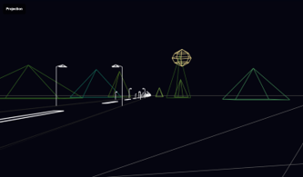
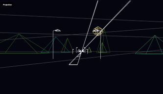
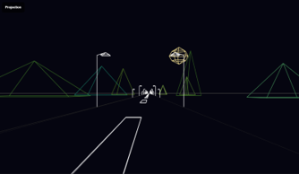
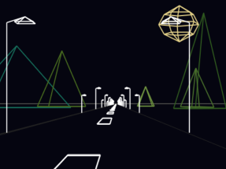
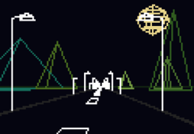
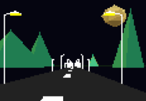

Project Documentation
Design
The design is a roadway with rocks and mountains scattered around,
road lines and road lights are spread alongside the road.
There is also a sun in the sky!
Detail
WASD to move (forward or sideway, no up-down control).
Hold Shift to run faster (only work in Clean Render).
R to reset the camera to starting position.
Q to change the sun to a moon, or vice versa (come with moving animation).
Click on one of the three buttons at the top-right to change the rendering style
(between clean line, pixelated line, or triangles). This will not reset the camera.
Implementation
- World: The project is built upon by objects, each of which consists of:
- - Vertices: A list of vertices, each element is a dictionary of 3 properties
(xyz position of said vertices in the world)
- - Edges: A list of edges, each element is a pair of 2 indexes (AB)
that represent an edge between vertices A and vertices B
(said index is the same as their index in the vertices list)
- - Triangles: A list of triangles, each element is a trio of 3 indexes (ABC)
that represent a triangle between vertices ABC
- - Color: The base color of the object. Used as default edges color
- - Triangles Color: A list of equal size to the triangles list that hold the color value
for each triangle in the same index
- Pinhole Camera: The project uses the pinhole camera implementation given by the course.
- - The implementation works by casting every vertex onto a camera plane through a point of convergence
(a point at the center, slightly in front of the camera), with some other cleaning steps
(such as flipping the position to show the real orientation of the taken environment).
- - The vertices projection and drawing step is done object-by-object.
Each object is instantiated by a function that completes the pinhole camera projection
of itself onto the screen.
- - A divergence from the original implementation includes additional cleaning steps
that deal with behind-the-convergence-point vertices. For each object instantiated,
every vertex is checked for its position relative to the camera. In cases where a vertex
is confirmed to be behind the camera, the function finds intersections of every vertex in front
of the camera with said vertex and adds said intersections into the vertices list (as well as the edges).
This essentially slices the object using the camera plane and removes the part behind the camera.
In a case where all vertices of an object are behind the camera, said object can be ignored.



Messy calculation occur (left) when some of object’s vertices is behind the camera, compared to current implementation after fix (right)
- Line Drawing: Upon obtaining all projected positions of all vertices of an object,
lines are drawn using edges data of the object.
- - On canvas: Use native canvas stroke function
- - On pixelated grid: A function is implemented that draw a line by starting at a starting point
and gradually move/draw the line by checking the 3 pixels pointing toward the end point,
moving to the one nearest the line using orthogonal projection calculation of each pixel onto the line
- Triangle Drawing: A function is implemented that takes in three points on the screen
and draws a triangle of specified color.
The function check for all pixels in a bounding box of the triangle,
drawing a pixel if said pixel is confirmed to be in the triangle (done using half-plane calculation,
this was done before the depth step is considered)
- - Z-buffer Rasterization: To deal with layer priority of objects' triangles,
each drawn pixel is given a z-value to mark how close it is to the camera.
When a pixel is confirmed to be in the triangle, the barycentric coordinate of the pixel to the triangle is calculated,
and the pixel's z-value is calculated using said barycentric coordinate and the triangle's vertices' camera-relative z coordinate.
The pixel coloring only happens if the new z-value is lower (closer to camera) than the old value.
Pixels are defaulted to Infinite z before being colored.



Clean line - Pixelated line - Triangle
- Animation: Movement created inside the canvas was done with repeated redrawing of canvas on position update.
Future Work
Camera & Object rotation: The project currently lacks rotation on both camera and object, making movement and viewing restricted.
Object interaction: Players currently cannot interact with any object with relative to their position/vision (only button event), which is boring.
Object movement & rendering optimization: The pixelated render and triangle render both have a lot of obvious optimizable parts that are
slowing down the overall game significantly (in movement and animation).